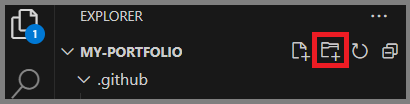
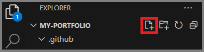

Quick Start Guide: GitHub Pages
Introduction
GitHub Pages are public webpages hosted and published through GitHub. The following sections provide instructions on how to set up a GitHub Pages site. Complete them in order.
Important Note
These instructions are for Windows only.
Prerequisites
Ensure that the following tools/programs have been installed:
Notes
- Installing Python and Pip is a prerequisite to installing MkDocs.
- Vale must be installed locally and as an extension in VS Code with spell check enabled.
Create a Repository
- Open GitHub Browser.
-
Click New at the top of the dashboard.

-
Enter the new repository name into the corresponding field.
- Provide any additional settings.
- Click Create repository at the bottom of the window.
Clone the Repository
- Navigate to the desired repository.
-
Click <> Code.

-
Copy the URL.
- Open GitHub Desktop.
-
Select the Current repository drop-down list.

-
Click Add > Clone repository.

-
Select the URL tab.
- Paste the URL into the corresponding field.
-
Click Clone.

Create a New Branch
- Select a repository from the Current repository drop-down list.
-
Click the Current branch drop-down list.
Note
Ensure the current branch selected is
Main. -
Click New branch.

-
Enter the branch name into the corresponding field.
-
Click Create branch.

-
Click Publish branch.
Configure the Repository
- Create and publish a new branch.
- Click Open in Visual Studio Code in GitHub Desktop.
- Open the VS Code terminal.
-
Run the following command to create a docs folder and the
mkdocs.ymlandindex.mdfiles:mkdocs new . -
Open the
mkdocs.ymlfile. -
Add the following plugins to the file:
theme: name: material icon: repo: fontawesome/brands/github edit: material/pencil features: - navigation.tabs - navigation.tracking - navigation.expand - toc.integrate - content.action.edit language: enmarkdown_extensions: - admonition - codehilite - smarty - pymdownx.magiclink - pymdownx.betterem - pymdownx.details - pymdownx.emoji - pymdownx.saneheaders - pymdownx.highlight - pymdownx.critic - pymdownx.caret - pymdownx.mark - pymdownx.tilde - pymdownx.inlinehilite - pymdownx.tabbed: alternate_style: true - pymdownx.tasklist: clickable_checkbox: true - pymdownx.superfences: custom_fences: - name: mermaid class: mermaid format: !!python/name:pymdownx.superfences.fence_code_format - pymdownx.tasklist: custom_checkbox: true - attr_list - md_in_html - sane_lists - tables -
Save the changes.
-
Click the New Folder icon.

-
Enter “.github/workflows”.
-
Click the New File icon.

-
Enter “ci.yml”.
- Open the
ci.ymlfile. -
Paste the following into the file:
name: ci on: push: branches: - master - main permissions: contents: write jobs: deploy: runs-on: ubuntu-latest steps: - uses: actions/checkout@v3 - uses: actions/setup-python@v4 with: python-version: 3.x - uses: actions/cache@v2 with: key: ${{ github.ref }} path: .cache - run: pip install mkdocs-material - run: mkdocs gh-deploy --force -
Save the changes.
- Exit the .github folder.
- Click the New File icon.
- Enter “.vale.ini”.
- Open the
.vale.inifile. -
Paste the following into the file:
StylesPath = .github/styles MinAlertLevel = warning Vocab = vale [*.md] BasedOnStyles = Vale ignore = URL, Consistency Vale.Terms = NO -
Save the changes.
- Select the .github folder
- Click the New Folder icon.
- Enter “styles/config/vocabularies/vale”.
- Click the New File icon.
-
Enter “accept.txt”.
Note
The
accept.txtfile allows spelling rule exceptions. -
Save the changes.
- Commit the changes to Main.
Create a Virtual Environment
Info
Setting up a virtual environment within a repository’s directory using Python’s venv module provides the ability to preview changes made before making a commit. It will run a web server that exposes the website at http://127.0.0.1:8000.
- Click Open in Visual Studio Code in GitHub Desktop after creating a new branch.
- Open the terminal in VS Code.
-
Enter the following commands into the terminal:
python -m venv ./venv ./venv/scripts/activate -
Run:
mkdocs serve -
Open the
http://127.0.0.1:8000link.
Publish to GitHub Pages
- Open GitHub Browser.
- Navigate to the repository being used.
-
Select the Settings tab at the top of the window.

-
Select Pages from the left-hand side menu.
-
Select gh-pages from the branch drop-down list and select /(root) from the file drop-down list under the page’s Branch section.

-
Click Save.
-
Click Visit Site at the top of the page.

| Sign-off Date | Name |
|---|---|
| 03/09/2024 | Mickey Mouse |